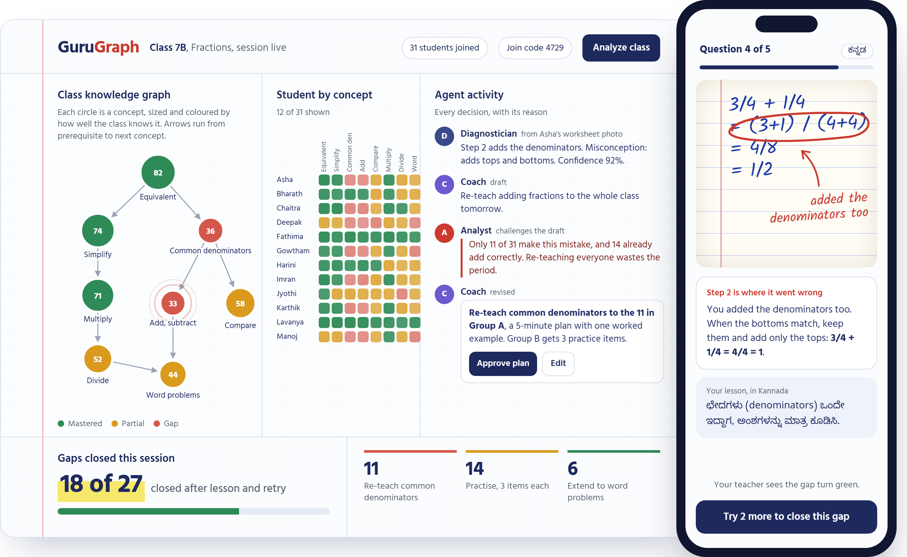

Catch fraction mistakes the day they happen.
GuruGraph is five AI agents that read every answer your class gives, even a photo of handwritten working. They hand you a five-minute plan for tomorrow, and each student gets a lesson in English, Hindi or Kannada.
When the bottoms match, keep them and add only the tops: 3/4 + 1/4 = 4/4 = 1.
ಛೇದಗಳು (denominators) ಒಂದೇ ಇದ್ದಾಗ, ಅಂಶಗಳನ್ನು ಮಾತ್ರ ಕೂಡಿಸಿ.
What your class looks like after one quiz
Students join from their phones with a QR code and take a five-question quiz that adapts to each of them. By the time the last answer is in, you know which concept is holding the class back and who needs what.

The knowledge graph shows which concept is holding the class back, and which concept it depends on.
The agents argue before you see a plan. If only 11 of 31 students need a re-teach, the plan says so.
Every student gets the exact wrong step named, a short lesson in their language, and two questions to close the gap.
Five agents, one shared map of the class
Each agent reads and writes the same Knowledge-Gap Graph. Rules do the work where a rule is enough. An AI model is used only where language or handwriting must be understood.
- DiagnosticianNames the misconception behind a wrong answer and the step where it happened, from a tap, a typed answer or a photo of the notebook.Rules and vision
- ExaminerPicks each student's next question from their weakest concept that is ready to learn.Rule
- CuratorWrites a short lesson and practice items in English, Hindi or Kannada.AI model
- AnalystTurns the class into a heatmap and learner groups, and checks every plan against the numbers.Rules
- CoachDrafts a five-minute plan for the teacher and a note for each family, which the teacher approves.AI model
Built so a teacher can trust it
The teacher approves everything
No lesson plan or parent message goes out until the teacher has read it.
Gaps close on checked questions
The questions that decide whether a gap closed come from a verified bank, never from generated text.
Every decision has a reason
The activity feed shows which agent did what and why, in one line.
Open source
The agent core is published as an example in the awesome-ai-apps collection, with offline tests anyone can run.
Run a free one-term pilot
We are looking for Class 6 to 8 mathematics teachers in and around Bengaluru. One quiz a week, a five-minute plan after each, and a short conversation at the end of the term.